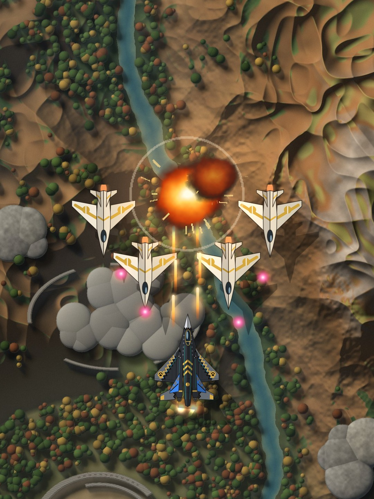
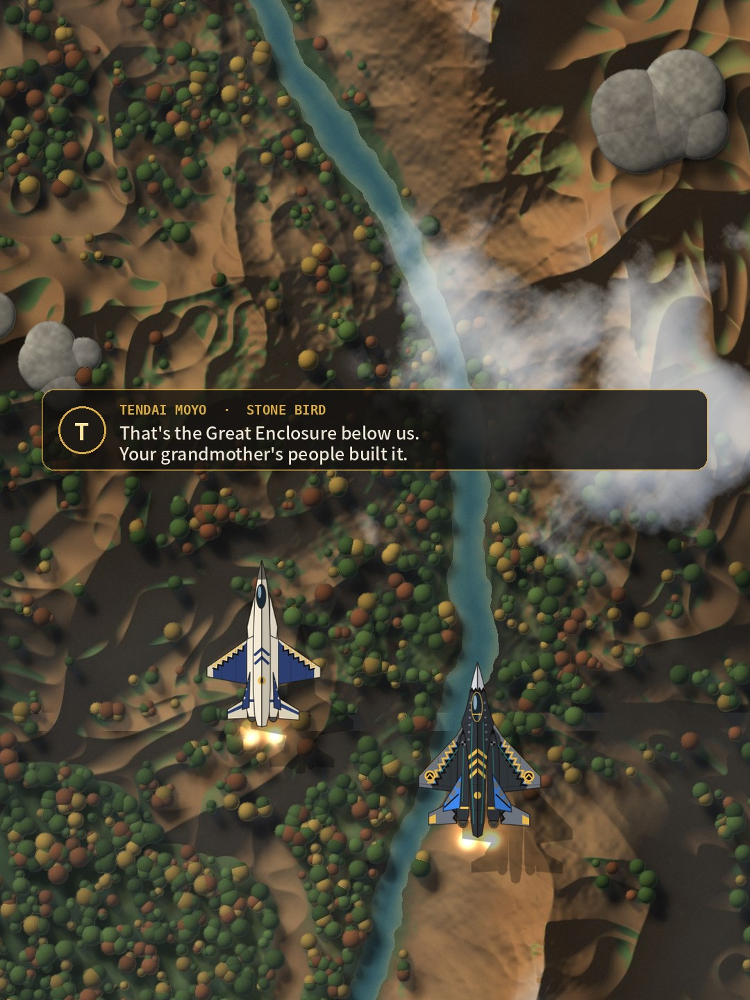
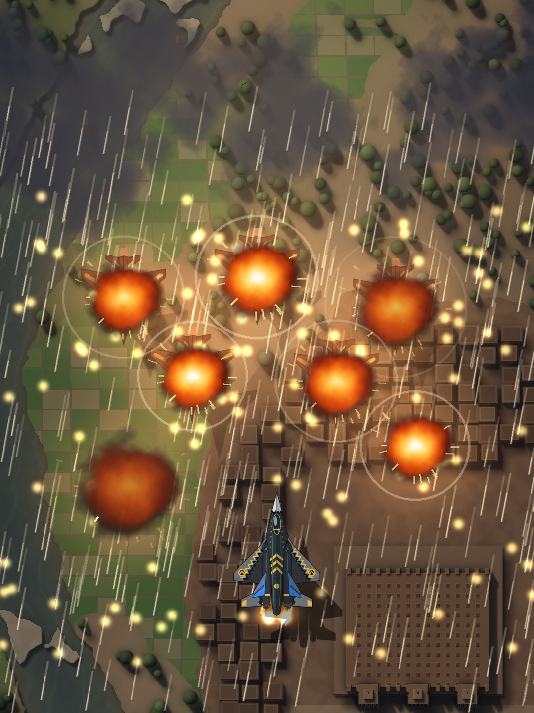
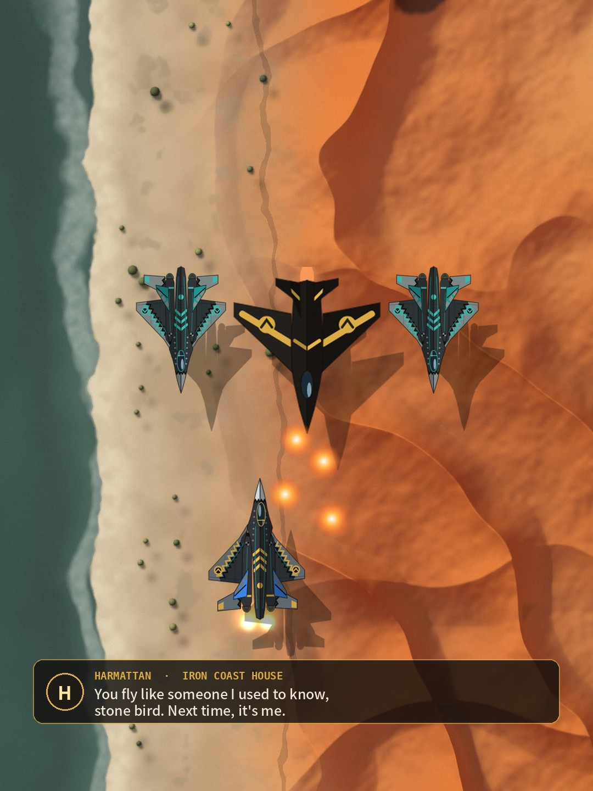
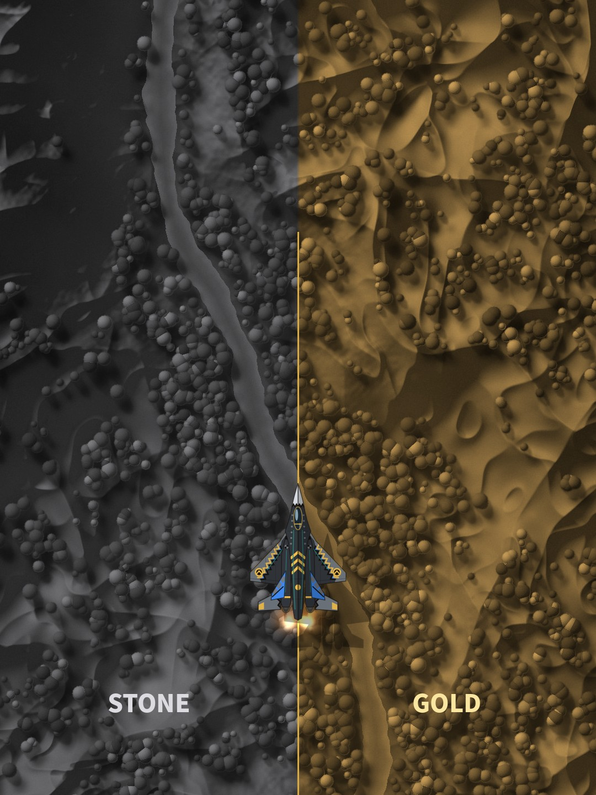

Apple Arcade pitch · Chie Collective
Stone Bird
The Contract Era
A story-driven vertical air-combat epic across Africa, for iPhone, iPad and Apple TV.
Playable beta on TestFlight now · Tachena Nhubu, Chie Collective

The hook
Fly your mother's jet.
Farai Moyo's mother Tendai was the pilot the plateau called Stone Bird. On Farai's certification flight, a raid brings Tendai down. Farai flies west in Goredema, the prototype everyone is hunting, and takes contracts on Africa's Atlantic coast under a name she can't use.
The jobs lead to Meridian, the house arming both sides of every war, and to an ace who knows exactly how her mother flew.
The story
Three acts, twelve contracts, two endings
Prologue · Act I
The Raid and the Coast
A flight over Great Zimbabwe ends in a raid. Farai lands on the Atlantic coast flying contracts for the Broker, until the Iron Coast's ace, Harmattan, hears how she flies.
Act II
The Contract War
Gun-runners off Cabo Verde, a night convoy through the Delta carrying Tendai's flight book, a storm duel off São Tomé, and Meridian's depot at Djenné.
Act III
The Hill
Stone or gold: her answer to Meridian sets the road. Both run through the Skeleton Coast, Victoria Falls and Kariba to the Kraal, a fortress in the air over the Hill.
A jeli, a West African storyteller, opens every contract: “Listen. Before the contracts, before the gold, there was a girl from the plateau, and a mother the plateau called Stone Bird.”

Big moments
Call the Rainmaker
Goredema throws a charge into the sky, it bursts into a storm, and white-hot rain comes down on everything under it, air and ground, ending in a thunderclap. The Storm Discharge, charged in battle, chains lightning from target to target.
Against them, more than 30 kinds of enemy: Shades that cloak, Echoes that mirror her, Kestrels that sweep their wings to dash, gunboats, an armoured train, a river monitor and the Kraal.

The rival
Harmattan knows her name
The Iron Coast House's ace was one of Tendai's pupils. He hunts Farai across the coast in duels that play like a real dogfight: he never hovers, he steers like an aircraft, and he comes round from behind.
“You fly like someone I used to know, stone bird. Next time, it's me.”
On the stone road he ends the war on her wing.
The choice
Stone or gold?
Meridian offers more gold than anyone on the coast has ever seen, for Tendai's book and Farai's silence. Take it, and fight the last act with Meridian's money. Refuse, and the book goes to every house on the coast.
Two roads through Act III. Two endings. The player's answer, not a dialogue tree.

The ask
Bring Stone Bird to Apple Arcade
An Arcade partnership with funding of $175,000 to direct an opening and an ending cinematic, record the voice cast, add Game Center and Mac, and finish accessibility, localization and polish, for a launch eight months after signing.
The beta is ready to play now on iPhone, iPad and Apple TV.
Play the beta: testflight.apple.com/join/Q4PAGvzU
tachena@chie.design